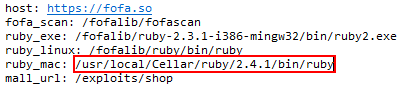

<!doctype html>
<html>

	<head>
		<meta charset="utf-8">
		<title>FOFA Client</title>

		<link rel="stylesheet" media="screen" href="../css/bootstrap.css" />
		<link rel="stylesheet" media="screen" href="../css/font-awesome.css" />
		<link rel="stylesheet" media="screen" href="../css/animate.min.css" />
		<link rel="stylesheet" media="screen" href="../css/fofa_pc.css" />

		<script src="../js/jquery.min.js"></script>
<script>
var pm_w=(screen.width-1555)/2;
window.moveTo(pm_w, 50);//移动窗口   
window.resizeTo(1555, 895);
</script>
		<script>
		var packagejson = require('../package.json');
		var fofaclirelease = packagejson.release;
		if(fofaclirelease == 0){
			var jspathname = 'combmh';
		}else{
			var jspathname = 'com';
		}
		document.write('<script type="text/javascript" src="../'+jspathname+'/u.js"></sc'+'ript>');
		document.write('<script type="text/javascript" src="../'+jspathname+'/bmheditor.js"></sc'+'ript>');
		document.write('<script type="text/javascript" src="../'+jspathname+'/method.js"></sc'+'ript>');
		document.write('<script type="text/javascript" src="../'+jspathname+'/poc.js"></sc'+'ript>');
		document.write('<script type="text/javascript" src="../'+jspathname+'/time.js"></sc'+'ript>');

		</script>

		
		<script type="text/javascript">
			var path = require('path');
			if (process.platform == 'darwin') {
				var packagejson = require('../package.json');
				var fofaclirelease = packagejson.release;
				if(fofaclirelease == 0){
					root_path_base = path.resolve('.');
				}else{
					root_path_base = path.dirname(path.dirname(path.dirname(path.dirname(path.dirname(__dirname)))));
				}	
			}else{
				root_path_base = path.resolve('.');
			}
		    if(process.platform == 'darwin' && root_path_base.indexOf('/private/var/folders')!=-1){
		    	console.log('uuuuuu');
				var os = require('os');
				var fs = require('fs');
				var rootpathtmp = os.homedir()+'/fofa_rootpath';
			    if (fs.existsSync(rootpathtmp)) {
			         var rootpathtmpdata = fs.readFileSync(rootpathtmp, 'utf-8');
			         if(rootpathtmpdata.length > 0){
			            root_path_base = rootpathtmpdata;
			         }
			    }
			 }
			var temp_params1 = '';
			var temp_params2 = '';
			var from = '';
			last_page_url = '';
			config_gloal = GetUserInfo();
            allPocInfo='';
			have_save_flag = false;
			old_poc_content = [];
			var update_poc_state = 0;
			
		</script>
		<style>
			html,
			body {
				height: 100%;
				margin: 0px;
				padding: 0px;
			}
			
			.table>thead>tr>th,
			.table>tbody>tr>th,
			.table>tfoot>tr>th {
				background-color: #f2f4f7;
				padding: 10px 0px;
				border-color: #e8ecf3;
			}
			
			.addtab {
				border-radius: 5px;
				color: #fff;
				background-color: #fff;
				border: 1px solid #b5bdc9;
				border-bottom: 0px;
				border-radius: 3px 3px 0px 0px;
				color: #3e5772;
				margin-left: 8px;
				font-size: 36px;
				height: 40px;
				padding: 0px 20px;
				line-height: 40px;
				display: inline-block;
				position: relative;
				cursor: pointer;
				top: 0px;
			}
			
			.addtab_tc {
				position: absolute;
				top: 38px;
				text-align: center;
				left: 0px;
				width: 140px;
				line-height: 35px;
				border-radius: 3px;
				z-index: 99;
				border: 1px solid #b5bdc9;
				font-size: 14px;
				background-color: #ffffff;
				padding-bottom: 30px;
			}
			
			.addtab_tc:hover {
				background-color: #d4d4d4;
				color: #000;
				border: 1px solid #8c8c8c;
			}
			
			.q2 {
				margin-bottom: 30px;
			}
			
			p {
				text-align: center;
				font-size: 24px;
				margin-bottom: 80px;
			}
			
			.nav_box {
				display: block;
				width: 100%;
				margin: 0px auto;
				padding: 0px;
				height: 39px;
			}
			
			.nav_t {
				float: left;
			}
			
			.nav_t li {
				display: block;
				float: left;
				padding: 0px 10px 0px 0px;
				height: 40px;
				line-height: 40px;
				text-align: center;
				background-color: #fff;
				border-radius: 3px 3px 0 0;
				margin: 0px;
				margin-left: 8px;
				position: relative;
				top: 0px;
				border: 1px solid #b5bdc9;
			}
			
			.nav_t li.act {
				background-color: #fff;
				color: #3e5772;
				border-bottom: 0px;
			}
			
			.nav_t li a {
				text-decoration: none;
				padding: 0px 8px 0px 18px;
				color: #8a9eb2;
			}
			
			.nav_t li i {
				margin: 0px 10px 0px 6px;
				color: #8a9eb2;
				cursor: pointer;
			}
			
			li.act a {
				color: #3e5772;
			}
			
			.nav_t li i:hover {
				color: #3e5772;
			}
			
			.mod_box {
				width: 100%;
				margin: 0px auto;
				background-color: #fff;
				border: 1px solid #b5bdc9;
				padding: 30px;
				line-height: 23px;
				padding-bottom: 50px;
			}
			
			.mod_all {}
			
			.mod {}
		</style>

	</head>

	<body>

		<div class="container-fluid" style="">
			<script type="text/javascript" src="../js/header.js"></script>

			<div id="content"></div>

		</div>
	</body>

</html>
<script type="text/javascript">	
	$(function() {
		if(!macCheckRuby()){
			return ;
		}
		$("#fullbg_ruby").show();
		$("#dialog_start").show();

		var UserInfo = GetUserInfo();	

		setTimeout(function() {
			if(UserInfo.fofa_server){
				//getAllPocData_time_start();//下载文件
				//getMyAllPocsList_time_start();//改状态
				//jssleep(5000);
				getAllPocData_time_start_new();
			}else{
				$("#fullbg_ruby").hide();
				$("#dialog_start").hide();
				to_routePage('poc.html');
			}
		}, 50);

		

	});
	function to_routePage(page_url) {

		if(last_page_url == 'mall.html'&& page_url != 'mall.html'){
			DownloadStorePocs();//下载POC
			to_updateUserInfo_message();//更新用户fcoin和消息
		}
		if(last_page_url == 'gg.html'&& page_url != 'gg.html'){
			DownloadStorePocs();//下载POC
			to_updateUserInfo_message();//更新用户fcoin和消息
		}
		//begin 未保存提示
		if(last_page_url == 'submit-poc.html'){
			
			if($.trim($('#Name').val()) != 'Exploit Name' || $.trim($('#Description').val()) != 'Exploit Description' || $.trim($('#Product').val()) != '' || $.trim($('#FofaQuery').val()) != ''){
				if(!have_save_flag){
					if(!confirm('您填写的内容尚未保存,确定离开此页面吗?')){
						return false;
					}
					have_save_flag = false;
				}
			}
		}
		if(last_page_url.indexOf("edit-poc.html") != -1){

			var new_poc_content = createFileData();		
			delete new_poc_content.FileName;
			delete new_poc_content.Posttime;
			delete old_poc_content.FileName;
			delete old_poc_content.Posttime;
			delete new_poc_content.status;
			delete old_poc_content.status;
			
			new_poc_content = JSON.stringify(new_poc_content);
			old_poc_content1 = JSON.stringify(old_poc_content);
			new_poc_content = new_poc_content.replace('"OR",', '');
			new_poc_content = new_poc_content.replace('"AND",', '');
			//console.log('11111');
			//console.log(new_poc_content);
			//console.log(old_poc_content1);

			
			if(new_poc_content != old_poc_content1){
				
				if(!have_save_flag){
					if(!confirm('您填写的内容尚未保存,确定离开此页面吗?')){
						return false;
					}
					have_save_flag = false;
				}
			}
			
		}
		have_save_flag = false;
		
		//end
		last_page_url = page_url;
		UrlSearch(page_url);
		$.ajax({
			url: page_url,
			cache: false,
			success: function(html) {

				$("#content").html(html);
				$(".pc_top li a").removeClass("act");
				if(page_url == "poc.html") {

					$(".pc_top li a").eq(0).addClass("act");

				}
				if(page_url == "mall.html") {
					$(".pc_top li a").eq(1).addClass("act");

				}
				if(page_url == "submit-poc.html") {
					$(".pc_top li a").eq(2).addClass("act");

				}
				if(page_url == "help.html") {
					$(".pc_top li a").eq(4).addClass("act");

				}
				if(page_url == "report.html") {
					$(".pc_top li a").eq(3).addClass("act");

				}

			}
		});
	}

	function UrlSearch(str) {
		var num = str.indexOf("?")
		str = str.substr(num + 1); //取得所有参数   stringvar.substr(start [, length ]

		var arr = str.split("&"); //各个参数放到数组里
		var param_str = '';
		for(var i = 0; i < arr.length; i++) {
			num = arr[i].indexOf("=");
			if(num > 0) {
				var name = arr[i].substring(0, num);
				var value = arr[i].substr(num + 1);
				if(name == "act1") {
					temp_params1 = value;
				}
				if(name == "FileName1") {
					temp_params2 = value;
				}
				if(name == "from") {
					from = value;
				}
			}
		}
	}
</script>
<!--begin mac ruby检查-->
<style>
#fullbg_ruby {background-color: gray;left: 0;opacity: 0.5;position: absolute;top: 0;z-index: 3;filter: alpha(opacity=50);-moz-opacity: 0.5;-khtml-opacity: 0.5; width:100%;height:100%;display:none}
#dialog_ruby p {margin: 0 0 12px;height: 24px;line-height: 24px;/*background:lightgreen;*/}
#dialog_ruby p.close {text-align: right;padding:0 10px;background:lightgreen;font-size: 15px;}
#dialog_ruby {background-color: #fff;border: 3px solid rgba(0, 0, 0, 0.4);width: 600px;height: 300px;left: 50%;padding: 5px;box-sizing: border-box;position: fixed !important;/* position: absolute; */top: 50%;z-index: 5;border-radius: 5px;display: none; transform: translate(-50%, -50%);}
#dialog_start {background-color: #fff;border: 1px solid rgba(0, 0, 0, 0.4);height:80px;width:118px;left: 50%;text-align:center;box-sizing: border-box;position: fixed !important;/* position: absolute; */top: 45%;z-index: 5;border-radius: 5px;display: none; transform: translate(-50%, -50%);}

</style>
<div id="fullbg_ruby"></div>
<div id="dialog_ruby" style="height:570px;width:700px;overflow: scroll">
    <div style="margin:10px 10px;color:#C60"><strong>您系统ruby版本过低，请安装更高版本（Fofa客户端ruby要求：版本：>2.0，且支持openssl）。</strong></div>
	<!--<div style="margin:10px 10px"><strong>如果您电脑有多版本ruby,可以指定Fofa客户端使用特定版本ruby(修改/fofalib/fofascan/conf/fofa.yml文件里的ruby_mac值)。</strong></div>-->
	<div style="margin:10px 10px"><strong>可以通过“brew install ruby”命令安装ruby（没有brew命令，先安装brew，安装命令“ruby -e "$(curl --insecure -fsSL https://raw.githubusercontent.com/Homebrew/install/master/install)"”）,
安装成功后打开客户端“/fofalib/fofascan/conf/fofa.yml”文件，修改mac_ruby路径为：“/usr/local/Cellar/ruby/2.4.1/bin/ruby”（版本号以实际安装为准），如下图：</strong></div>
	<div style="margin:10px 10px"><strong>请根据以下提示信息进行操作，如果您已经安装或配置好ruby环境，请点击<a style="color:#0689ff" href="javascript:window.location.reload();">刷新</a>。</strong></div>
	<div class="mac_ruby_check" style="margin:20px 20px"><pre></pre></div>

	
        
</div>
<div id="dialog_start">
    <div style="margin:10px 10px">数据加载中...</div>
	<div class="loading"><span></span><span></span><span></span><span></span><span></span></div>
</div>
<script>
function macCheckRuby(){
	if (process.platform != 'darwin') {
		return true;
	}
	try {
	  //获取跟目录
	  var path = require('path');
	  var root_path = root_path_base;
	  //读取配置文件
	  var fs = require('fs');
	  //var config = JSON.parse(fs.readFileSync(root_path+'/config/fofa.json','utf-8').toString());
	  var ruby_mac = getFofaConfig('ruby_mac');
	  var ruby_exe = getFofaConfig('ruby_exe');
	  var fofa_scan = getFofaConfig('fofa_scan');
	  //构造完整poc文件路径
	  //alert(config.ruby_exe);

   
	  var ruby_filepath = root_path + fofa_scan + '/readFile_tmp.rb';

	 
	  var execd = require('child_process').execSync;
	  /*exec(ruby_exe+' "'+ruby_filepath+'" '+ name,function(error,stdout,stderr){
		if(stdout.length >1){
		  console.log('you offer args:',stdout);
		} else {
		  console.log('you don\'t offer args');
		}
		if(error) {
		  console.info('stderr : '+stderr);
		}
	  }); */
	  //console.log(ruby_exe+' "'+ruby_filepath+'" '+ name);
	  var name = '_blank.rb'; 
	  if (process.platform == 'darwin') {
		var result = execd(ruby_mac+' "' + ruby_filepath + '" ' + name);
	  }else{
		//var result = execd(root_path + ruby_exe + ' "' + ruby_filepath + '" ' + name);
	  }
	  console.log(result.toString());
	  //result = JSON.parse(result);
	  //result = result.toString().replace(/=>/g, ":");
	  //console.log(result);
	  //console.log(result.toString());
	  //console.log('11111');
	  return true;
	} catch (ex) {
		$("#fullbg_ruby").css({
			display: "block"
		});
		$("#dialog_ruby").show();
		$(".mac_ruby_check").html(ex.message);
	    console.log(ex);
	    return false;
	} 	

}
</script>
<!--end mac ruby检查 -->
